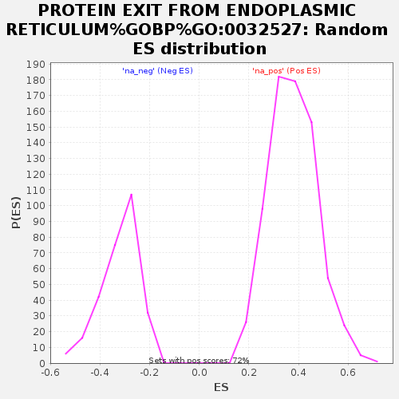

Profile of the Running ES Score & Positions of GeneSet Members on the Rank Ordered List
| Dataset | GvHD_A2_Ranks |
| Phenotype | NoPhenotypeAvailable |
| Upregulated in class | na_neg |
| GeneSet | PROTEIN EXIT FROM ENDOPLASMIC RETICULUM%GOBP%GO:0032527 |
| Enrichment Score (ES) | -0.66780347 |
| Normalized Enrichment Score (NES) | -2.0807335 |
| Nominal p-value | 0.0 |
| FDR q-value | 0.018730314 |
| FWER p-Value | 0.167 |
| SYMBOL | RANK IN GENE LIST | RANK METRIC SCORE | RUNNING ES | CORE ENRICHMENT | |
|---|---|---|---|---|---|
| 1 | STEEP1 | 974 | 1.223 | 0.0409 | No |
| 2 | SEC16A | 6620 | 0.388 | -0.1642 | No |
| 3 | FAF2 | 6663 | 0.384 | -0.1405 | No |
| 4 | NPLOC4 | 10024 | 0.203 | -0.2645 | No |
| 5 | SEC61B | 11192 | 0.148 | -0.3024 | No |
| 6 | TECPR2 | 11809 | 0.116 | -0.3199 | No |
| 7 | UFD1 | 13064 | 0.058 | -0.3673 | No |
| 8 | MAP1LC3C | 16308 | -0.009 | -0.4993 | No |
| 9 | ERLEC1 | 17412 | -0.064 | -0.5401 | No |
| 10 | OS9 | 19300 | -0.191 | -0.6046 | No |
| 11 | RHBDD1 | 19318 | -0.192 | -0.5926 | No |
| 12 | DERL1 | 21131 | -0.402 | -0.6402 | Yes |
| 13 | RANGRF | 21808 | -0.477 | -0.6363 | Yes |
| 14 | SYVN1 | 22140 | -0.540 | -0.6142 | Yes |
| 15 | SEC13 | 22447 | -0.601 | -0.5870 | Yes |
| 16 | DERL2 | 22493 | -0.610 | -0.5486 | Yes |
| 17 | VCP | 22628 | -0.637 | -0.5120 | Yes |
| 18 | AUP1 | 22741 | -0.675 | -0.4720 | Yes |
| 19 | AFG2B | 23071 | -0.775 | -0.4343 | Yes |
| 20 | TMEM129 | 23220 | -0.822 | -0.3860 | Yes |
| 21 | HM13 | 23698 | -1.017 | -0.3384 | Yes |
| 22 | SEL1L | 23901 | -1.135 | -0.2717 | Yes |
| 23 | HSP90B1 | 24073 | -1.247 | -0.1963 | Yes |
| 24 | SELENOS | 24097 | -1.268 | -0.1135 | Yes |
| 25 | HERPUD1 | 24423 | -1.962 | 0.0028 | Yes |
